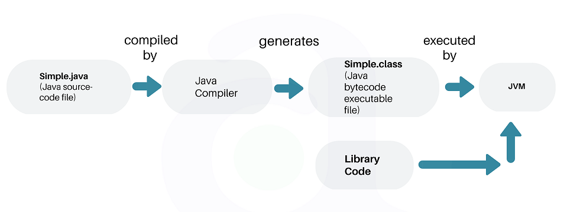
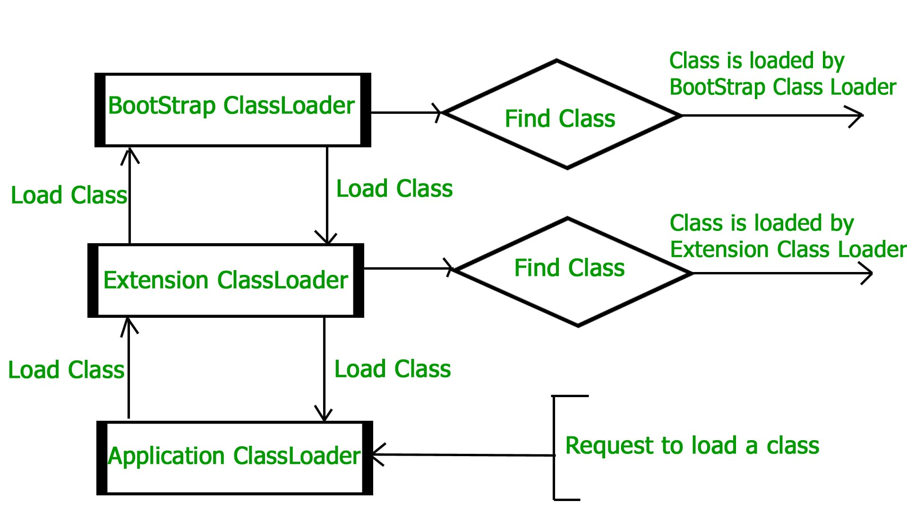
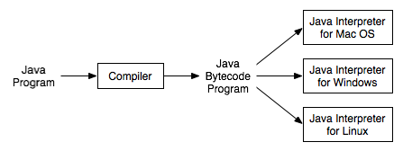
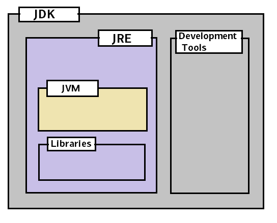

JDK, JRE, JVM | 深入了解
了解JDK, JRE, JVM之间的区别，JVM是如何工作的？什么是类加载器(class loaders), 解释器(interpreter)和及时编译器(JIT compilers)
1. Java程序的执行
在开始之前，让我们快速的回顾一下一个Java程序是如何执行的
- 使用一个编辑器或者IDE(integrated development enviroment, 如Eclipse或Intellij Idea)编写Java源代码，假设是
Simple.java文件； - 程序需要编译成字节码(bytecode)。使用Java编译器(
javac)将源代码文件编译成Simple.class文件； - 在任意平台(e.g.Mac, Windows, Linux)上的JVM(java virtual machine)执行
.class文件； - JVM将字节码翻译成本机机器码(native machine code), 能够让本机执行。

2. 什么是JVM ?
Java virtual machine(JVM) 是用于运行字节码的虚拟机。我们通过将Java源代码文件编译成.class字节码文件，之后由JVM执行。这也是为什么Java具有**WORA(Write Once Run Anywhere)**特性的原因。
在现实世界中，JVM是一种规范(specification)，它提供一种使Java字节码能够执行的运行环境(runtime environment)。不同的供应商这个规范的不同实现，例如：这个wiki页面列出的就是JVM的不同实现。
最流行的JVM实现是由Oracle Corporation拥有和提供的Hotspot。
JVM使用了许多的先进技术为Java应用程序提供最佳性能，包括先进的内存模型(memory model)，垃圾收集器(garbage collector)和自适应优化器(adaptive optimizer)。
JVM提供两种不同的版本 - 客户端(-client)和服务器(-server)。尽管它们很类似，但是服务器版本JVM经过专门调整，能够最大限度地提高运行速度峰值，它适用于在服务器上长期执行的应用程序，这些应用需要的是尽可能快的运行速度，而不是快速启动或较小的运行时内存占用。开发者可以指定-client或者-server来选择想要的JVM。
JVM之所以说是虚拟(virtual)的, 是因为它提供的机器接口(machine interface)不依赖于底层的操作系统以及机器的硬件架构。
2.1 JVM 架构
JVM可以分成三个主要的子系统(subsystem):
- 类加载子系统(Class Loader Subsystem)
- 运行数据区(内存区)(Runtime Data Area or Memory Area)
- 执行引擎(Execution Engine)

类加载子系统
类加载子系统用于加载类文件(class file)。它的主要功能为: 加载(loading)、链接(linking)、初始化(initialization)。
1.加载(loading)
- 为了加载类文件，JVM提供了三种类加载器: Bootstrap, extension 和 application 类加载器;
- 当加载一个类文件时，JVM需要找出该类的依赖；
- 首先，bootstrap类加载器会在
$JAVA_HOME/jre/lib目录下的rt.jar包中查找； - 若有类文件未找到，extension类加载器会在
$JAVA_HOME/jre/lib/ext目录下的类文件； - 若仍有类文件未找到，application类加载器会搜索查找
CLASSPATH环境变量下的所有类文件和jar包文件； - 通过这些类加载找到的类文件会被加载，找不到的类文件则会抛出
ClassNotFoundException异常。
Java中类加载器的加载采用了双亲委托机制(Delegation-Hierarchy principle)。
当一个类加载接收到加载类的请求时，首先会将加载任务委托给上一级类加载器，依次递归，直到最后的Bootstrap ClassLoader，若Boostrap ClassLoader找不到时，则会将加载请求委托给下一级的类加载器，依次递归，直到最后的Application ClassLoader，在此过程中，若类被找到则直接返回，找不到则最终会抛出一个java.lang.ClassNotFoundException的运行时异常。

使用这种机制的好处非常好理解，目的就是为了避免重复加载已有的类，提高效率，还有就是强制从最高一级开始逐级搜索类文件，确保核心基础类优先加载。
JVM触发类加载器去加载外部类的情况:
- 显示字节码指令集(
new/getstatic/putstatic/invokestatic): 对应的场景是创建对象或者调用到类文件的静态变量/静态方法/静态代码块； - 反射: 通过对象反射获取类对象时；
- 继承: 创建子类触发父类加载；
- 入口: 包含
main方法的类首先加被加载。
2. 链接(linking)
此过程分为三个阶段:
- 验证阶段(Verify): 字节码验证器(Bytecode verifier)会验证生成的字节码是否正确，验证不通过则会抛出验证；
验证阶段对于虚拟机的类加载机制来说，是一个非常重要但不一定是必要的阶段。如果所运行的全部代码都已经被反复使用和验证过，在实施阶段就可以考虑使用
-Xverify:none参数来关闭大部分的类验证措施，从而缩短虚拟机类加载的时间。
- 准备阶段(Prepare): 为类中的静态变量(static variables)分配内存空间, 但还未初始化，也就是
0或者null； - 解析阶段(Resolve): 将方法区(Method Area)的所有符号引用(symbolic memory references)全部替换为直接引用(Direct Reference)
符号引用(Symbolic Reference): 符号引用以一组符号来描述所引用的目标，符号引用可以是任何形式的字面量，符号引用与虚拟机实现的内存布局无关，引用的目标并不一定已经在内存中。
直接引用(Direct Reference): 直接引用可以是直接指向目标的指针、相对偏移量或是一个能间接定位到目标的句柄。直接引用与虚拟机实现的内存布局相关，同一符号引用在不同的虚拟机上翻译出来的直接引用一般都不相同，如果有了直接引用，那引用的目标必定已经在内存中存在。
3. 初始化(Initialization)
作为类加载过程的最后一个阶段，它为所有的静态变量赋初值，并执行静态代码块(static blocks)。
JVM内存区域
在一个Java程序执行时，JVM为它定了许多运行时数据区(runtime data areas)。 其中一些数据区在JVM启动的时候创建，并在JVM退出的时才会销毁(Destroy)。其余的数据区是每个线程(Thread)各自都有的，在线程创建的时候创建，线程退出的时候销毁。
在上面给出的JVM架构图就可以看到, 方法区(Method Area)、堆区(Heap Area)、本地方法区(Native Method Area)是随JVM启动而创建的(一个JVM只能有一个)； 栈区(Stack Area)和程序计数寄存器(PC Registers)是每个线程都有的，随线程创建而创建，销毁而销毁。
- 方法区域(Method Area): 方法区存放类的结构数据，如运行常量池(runtime constant pool), 字段和方法数据，方法的代码，方法也包括类(class)、实例(instance)和接口初始化(interface initialization)的方法。
方法区在逻辑上实际是堆(heap)的一部分，但是不能被垃圾收集器收集，尽管垃圾收集在堆上是强制执行的。方法区的大小可以是固定的，或者可以根据需求进行扩展或缩小，且并不要求方法区的内存是连续的。
如果方法区的内存无法满足分配请求，JVM会抛出一个OutOfMemoryError。
- 堆区域(Heap Area): 存放程序执行创建的所有对象，堆中存放的对象会有Garbage Collection来管理回收，堆的大小可以是固定，也可以动态大小的(取决系统的配置)，并且为堆分配的内存不需要是连续的。
如果自动存储管理系统(automatic storage management system)管理的堆内存空间无法满足分配需求，JVM会抛出一个OutOfMemoryError。
因为多个线程(multiple threads)共享方法区域和堆区域，所以数据的存储不是线程安全(thread-safe)的。
- 栈区域(Stack Area): 每个线程均有一个独立的栈。对于每个方法的调用，都会在栈中创建一个条目(entry), 称为栈帧(Stack Frame); 所有的局部变量(local variables or thread-local variables)也会在栈内存中创建。栈区域是线程安全的，因为它不是共享资源。栈帧可以分为三种子实体(subentities):
- 局部变量数组(Local Variable Array): 与方法相关的局部变量，它们相应的值将存放在这里；
- 操作数栈(Operand stack): 如果需要执行任何中间操作时，操作数栈充当执行操作的运行时工作区(runtime workspace)；
- 帧数据(Frame data): 对应方法的所有符号(Symbols)均存放在这里。在任何异常的情况下，捕获的块信息将保留在帧数据中。
- 如果线程执行过程中，对栈区域的内存需求无法得到满足, JVM会抛出一个
StackOverflowError异常； - 若栈区域内存允许动态扩展，如果内存不足以实现扩展，或者当内存无法满足新创建线程的需求时，JVM会抛出一个
OutOfMemoryError异常。
- 程序计数器(PC Registers): 存放当前执行语句的物理内存地址，每个线程都有一个独立的程序计数器。
- 本地方法栈(Native Method stacks): 存放本地方法(native method),信息，每个线程创建时，对应的本地方法栈也会创建。
- 当本地方法栈无法满足一个线程执行时的需求时，JVM 会抛出一个
StackOverflowError异常； - 本地方法栈的大小可以是固定也可以是动态的，当扩展本地方法栈时或者为一个新的线程创建一个初始化的本地方法栈时，若内存需求无法得到满足，JVM会抛出
OutOfMemoryError异常。
执行引擎
存放到JVM内存区(Memory Area)或运行数据区(Runtime Data Area)中的字节码将由执行引擎(Execution Engine)执行。它使用两个内建的解释器(inbuilt interpreter)和一个及时编译器(JIT compiler)来将字节码转换成机器码，并执行。

不同平台有不同的解释器
在JVM中，解释器和编译器都生成本地代码(native code),但它们生成代码的方式不同，代码优化也不同。
- 解释器(Interpreter):
JVM解释器根据预先定义好的JVM指令到机器指令的映射，将每一条字节码指令都转换成对应的本地指令(native instruction)。并且在没有对代码进行任何优化的情况下，直接执行。
解释器解释代码速度快；但是执行慢(代码未优化)，且对于重复的方法调用，每次都需要重新做解释再执行。
- JIT 编译器(JIT compiler):
为了提高性能，JIT 编译器会将合适的字节码序列(如上面提到的重复方法调用代码，以及其他的重复代码)编译成本地机器码，这些本地机器码可以被重复使用，以此来提高系统的性能。
JIT编译器由四个部分组成:- 中间代码生成器(Intermediate Code Generator): 用于生成中间代码；
- 代码优化器(Code Optimizer): 用于优化上面生成的中间代码；
- 目标代码生成器(Target Code Generator): 生成本地机器码；
- 配置器(Profiler): 一个特殊的部分，用于查找hotspot中的方法是否多次执行。
- 垃圾收集器(Garbage Collector): 收集和清除那些不可达对象(unreferenced objects or dead objects)。
[补充:]
- 解释执行: 将高级语言编写的代码一条一条读取，解释成等价的低级语言代码并在对应的低级虚拟机上执行，在读取解释下一条代码，直到全部代码解释执行完毕。
- 编译执行: 将所有的由高级语言编写的程序进行编译(转换成能够实现等价功能的低级语言程序)，并在低级虚拟机上执行。
- (JIT, Just-in-time)及时编译: 结合解释执行和编译执行的特点，它编译一部分代码，执行，再继续编译执行(不是一次性编译)。
计算机体系结构中将计算机系统按功能划分层次结构:
第6级(虚拟机) -> 应用语言机器
第5级(虚拟机) -> 高级语言机器
第4级(虚拟机) -> 汇编语言机器
第3级(虚拟机) -> 操作系统机器
第2级(物理机) -> 传统机器语言机器
第1级(物理机) -> 微程序机器
- 翻译(Translation): 先用转换程序把高一级机器上的程序转换为低一级机器上的等效程序，然后再在该低级机器上运行，实现程序的功能。
- 解释(Interpretation): 是对于高一级机器上的程序的每一条语句或指令，都转成去执行低一级机器的一段等效程序. 执行完之后，再去高一级机器取下一条语句或指令，再进行解释执行，如此反复，知道解释执行完整个程序。
在6级层次中，一般下面三层是用解释实现的，而上面三层是经常使用翻译的方式。
Java Native Interface(JNI)
JNI处理本地方法库文件(Native Method Libraries)，为执行引擎提供需要的本地方法库文件。
Native Method Libraries
存放执行引擎需要用到的本地方法库文件的一个集合。
3. 什么是JRE ?
JRE(Java Runtime Environment, Java运行环境)一个包含一些库文件(jar包)、用Java编写的用于运行程序的组件和Java虚拟机的软件包。
为了运行任何Java程序，我们至少需要在我们的机器上安装JRE。
JRE绑定以下组件:
- Java HotSpot 客户端虚拟机需要用到的DLL动态链接库文件;
- Java HotSpot 服务端虚拟机需要用的DLL动态链接库文件;
- Java 运行环境用到的代码库文件(Code libiraries)、属性设置(property settings)以及资源文件(resource files)，例如:
rt.jar和charset.jar; - Java 扩展文件，例如:
localedata.jar。
以及其他的安全管理用到的文件，applets使用的jar包等。
不同系统平台、64位和32位的系统拥有不同的JRE。
4. 什么是JDK ?
JDK(Java Development Kit, Java 开发工具)，它包含JRE, 同时包含用于开发Java程序的工具。
下面列出的是JDK包含的一些重要的开发工具:
- appletviewer: 用于运行和调试Java applet 程序，不需要Web浏览器；
- apt: 注解处理工具(The annotation-processing-tool)；
- extchecker: 检测jar包冲突的工具；
- javadoc: 文档生成工具，可以根据源代码编写的注释自动生成文档；
- jar: 打包工具，用于将相关的类库打包成一个jar包文件，也可以用于管理jar包；
- jarsigner: jar包签名和验证工具；
- javap: class 类文件反编译器(class file disassembler)；
- javaws: JNLP程序 Java Web 启动器；
- JConsole: Java 监视和管理console；
- jhat: Java 堆分析工具；
- jrunscript: Java 命令行脚本 shell；
- jstack: 用于打印Java线程栈踪迹的工具；
- keytool: 操作keystore的工具；
- policytool: 策略(policy)修改和管理工具；
- xjc: Java API 的一部分，JAXB(XML Binding API), 接受XML模式(schema)并生成Java类。
和JRE一样，JDK也是平台独立的，需要为不同的机器下载不同的JDK。
5. JDK, JRE, JVM之间的区别
基于上面的讨论，我们可以简单下面一个图来展示它们的关系:
JRE = JVM + libraries to run Java application.
JDK = JRE + tools to develop Java application.

简单来说，Java开发人员需要在机器上安装JDK来开发Java程序；如果我们只需要能够运行Java程序，则只在机器上安装JRE即可。
References
- How JVM Works - JVM Architecture? GeeksforGeeks. October 2016. https://www.geeksforgeeks.org/jvm-works-jvm-architecture/.
- java - What is the difference between JVM, JDK, JRE & OpenJDK? Stack Overflow. https://stackoverflow.com/questions/11547458/what-is-the-difference-between-jvm-jdk-jre-openjdk.
- The JVM Architecture Explained - DZone Java. https://dzone.com/articles/jvm-architecture-explained.